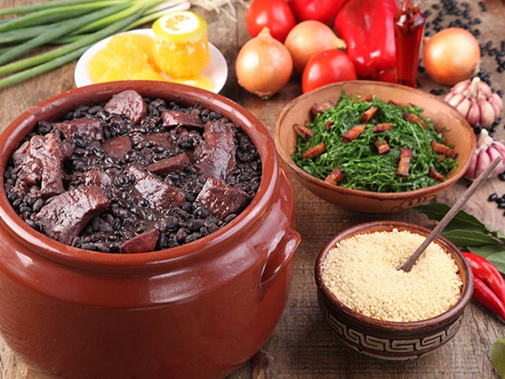

Feijoada

Descrição
Ícone da culinária brasileira, a feijoada é um cozido de feijão-preto enriquecido com uma variedade de carnes, como linguiça, carne de porco e bacon. Seu sabor robusto e tradicional a torna um tesouro gastronômico apreciado por muitos.
Ingredientes
- 500g de feijão-preto
- 300g de carne-seca
- 200g de linguiça calabresa
- 200g de carne de porco (orelha, pé, rabo)
- 200g de bacon
- 2 cebolas médias, picadas
- 4 dentes de alho, picados
- 2 folhas de louro
- 1 colher de sopa de óleo
- Sal e pimenta a gosto
- Farinha de mandioca para acompanhar
- Arroz branco cozido para servir
Etapas
- Lave o feijão e deixe de molho em água por cerca de 8 horas. Após esse período, escorra e reserve.
- Em uma panela de pressão, coloque o feijão, a carne-seca, a linguiça calabresa, a carne de porco, o bacon, as cebolas, o alho, o louro e o óleo.
- Cubra com água suficiente para cobrir todos os ingredientes e leve à pressão. Cozinhe por cerca de 40 minutos após o início da pressão.
- Após o cozimento, verifique se a carne está macia e o feijão bem cozido. Se necessário, cozinhe por mais tempo.
- Retire a pressão, ajuste o sal e tempere com pimenta a gosto. Misture bem.
- Sirva a feijoada acompanhada de arroz branco, farinha de mandioca e, se desejar, laranjas fatiadas.
- Aproveite essa tradicional e saborosa feijoada brasileira!